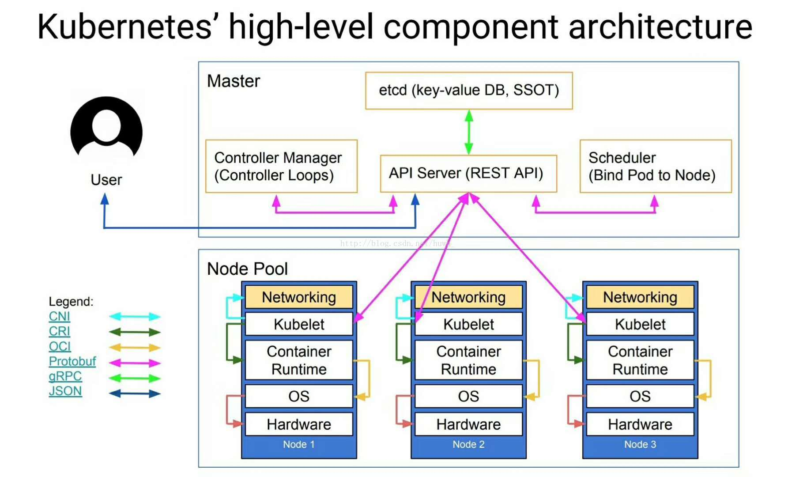
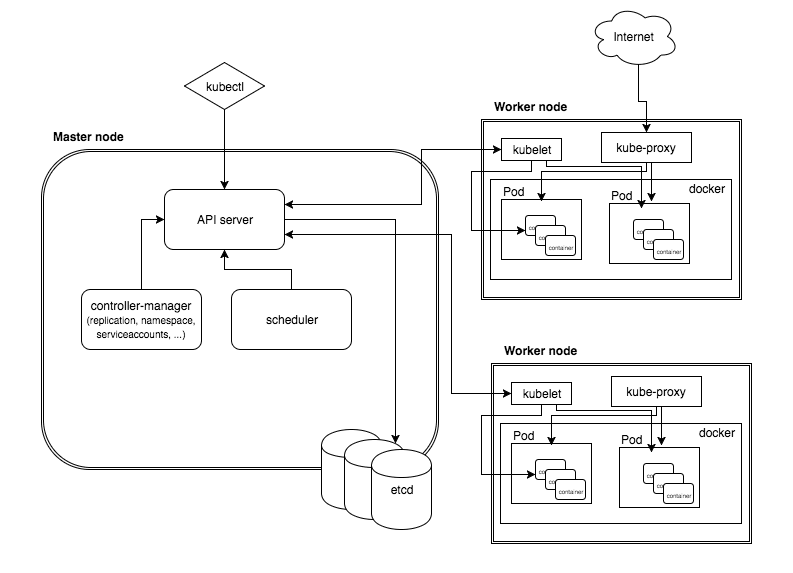
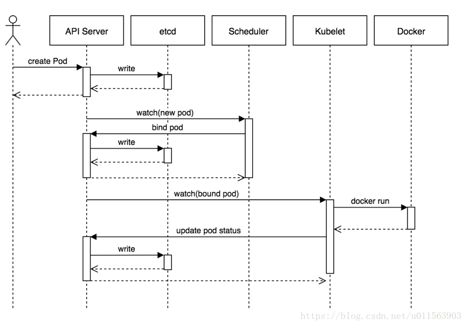
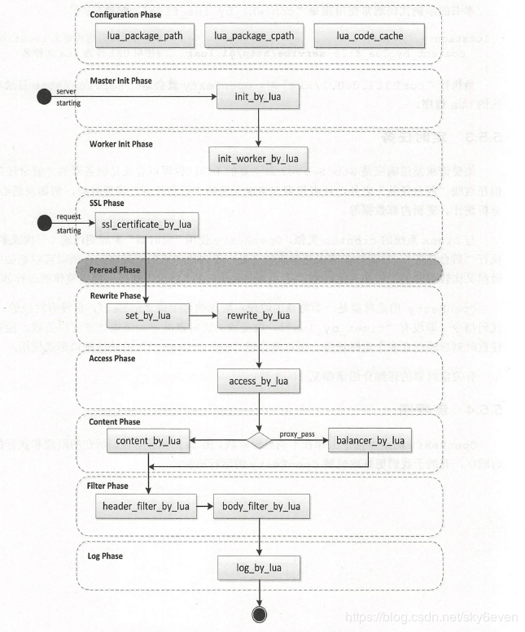
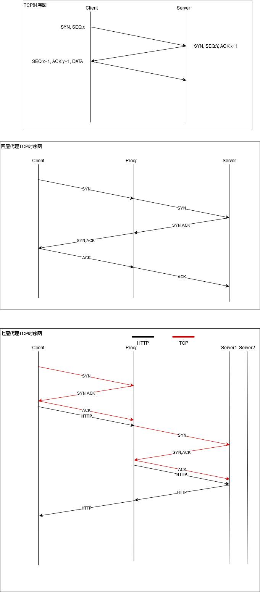

背景
学历: 大专
经验: 7, 8年的游戏运维
岗位: 运维开发
地点: 珠海办公
前传
电面1
自我介绍
balabala~~~
对K8SK8S的了解
1 | etcd, 持久化的存储 |
OSI模型
1 | //下层为上层提供服务, 网络层以下(包括)可以不同 |
vxlan的原理
1 | 将二层的数据通过UDP端口封装成三层的网络进行转发 |
docker的原理
1 | 请求系统调用时传递参数, 从而实现多维度的隔离 |
ELK的索引管理和优化
1 | 索引管理 |
电面2
自我介绍
balabala~~
七层/四层负载均衡区别以及LVS的了解
1 | 四层的代理无法获取七层的信息 |
kafka吞吐量高的原因
1 | 每个topic会将数据拆分在不同的分区上, 而这些分区会存放在不同的broken上 |
cache/buffer
cache1
2
3
4
5
6
7
8
9
10因为外部存储的操作非常耗时, 所以会尽可能的减少外部存储的操作.
根据磁盘局部原理, 在读取当前数据时, 未来一段时间内, 可能会用到附近的数据
(猜测是因为顺序写的原因)
比如当我从磁盘读取数据5时, 可能会将数据4,数据6一起读取进内存(根据页大小)
这样, 当我需要数据4时就能直接在内存里面获取了. 从而减少了外部存储的操作.
提高了效率, 及时我不需要数据4, 我读取外部存储的耗时成本是一样.
当内存不足时(进程申请的内存), 会根据LRU(最近最少使用算法)释放掉一些cache
buffer1
2
3系统A发送数据时, 系统B会将收到的数据存放在buffer里面
当系统B收到所有数据时, 将存在buffer里面的数据统一提交
(这是因为带宽的原因, 无法将所有的数据一次发送, 只能一点点的发送)
现场面
上来两个面试官.
面试官1
数组和链表的区别
1 | 数组是一种逻辑结构, 链表是一种存储结构, 链表对应的应该是顺序表 |
数组和链表的场景
1 | 数组的元素大小相同, 可以通过数组第一个元素的地址计算出数组内任意个元素的地址, 所以能够实现随机访问 |
redis的LIST结构如何实现快速查询和删除
不知
redis的sorted set如何实现一个订单过期功能
方案11
2
3
4
5
6
7将订单号设置为KEY, 超时时间设置为score.
这样排序, 时间最短的在最前面, 然后使用一个线程每隔一段时间去检查一次.
发现订单过期时修改数据库状态
只是觉得这个方法很浪费时间, 大量重复没有意义的动作.
没想到面试官说很多公司就是使用这种方式实现的.
算是瞎猫碰到死耗子
方案21
2使用redis的ttl, 当KEY过期后, 通过redis事件通知来修改数据库状态.
参考https://redis.io/topics/notifications
方案31
2
3
4
5
6
7
8
9使用redis的ttl, 当KEY过期后, 订单删除
同时在数据库添加一个订单过期的时间.
这样可以通过时间范围来过滤一个未支付的订单.
有个问题, 定单通常都是有状态属性的
这样什么时候, 什么方式去更新这个状态呢
我的想法应该是未支付状态, 通过过期时间来判断这个订单是否失效
从使用角度看带来麻烦, 但是效率高, 较稳定
数据库的隔离级别, 什么是不可重复度读
并发导致的问题
1 | 脏读: |
事物隔离级别:1
2
3
4读未提交, 接受脏读, 不可重复读, 幻读, 高效率, 低安全
读已提交, 接受不可重读读, 幻读
可重复读, 接受幻读, 默认
串行化, 所有事物依次执行, 低效率, 高安全
不可重复度实现:1
2其实不清楚, 做个大胆的假设, 当事务修改数据时, COPY一个副本, 避免修改原始数据
面试官回答差不多, 使用的是数据版本控制
一个二叉树的遍历思路
1 | A |
不知
面试官2
redis的雪崩和穿透以及预防手段
穿透1
2
3
4
5redis作为缓存是为了分担mysql的压力, 如果用户访问了大量没有缓存到的数据.
请求会直接跑到mysql层, 导致应用响应很慢.
在应用层做判断, 使用布隆过滤器
击穿1
2
3当key过期时, 大量的并发请求会瞬间压垮数据库
使用互斥锁/队列来避免突发大量读数据库的请求
雪崩1
2
3
4
5
6当一批key的ttl时间过期, 会导致redis的缓存大量的失效
请求全部跑到mysql上, 结果就是应用响应慢.
1. 将key的ttl设置为不同的时间, 或者不设置ttl时间(为啥要设置, 使用LRU不好吗)
2. 当一个缓存过期时请求二级缓存, 一级缓存的时间短, 二级缓存时间长
lvs的三种模式
1 | 上同... |
K8S的架构(转)





mysql的架构(转)

openresty请求的生命周期(转)

写一个最大公约数/冒泡排序
不知
七层负载均衡和四层负载均衡区别

1 | 七层代理因为需要将数据包提交给应用层, 所以效率会慢. |
总结/吐槽
从面试者的角度看
1 | 面完之后心里也有低了, 凉凉. |
从面试官的角度看
1 | 反正面试没过, 我肯定是不开心的, 坐车4小时, 来回8小时, 心累啊(可能存在不客观) |
最后
1 | 这是第二次面金山了, 又GET到了新知识. |
后记
1 | 在和HR小姐姐的沟通下, 获得了一些面试的反馈. |